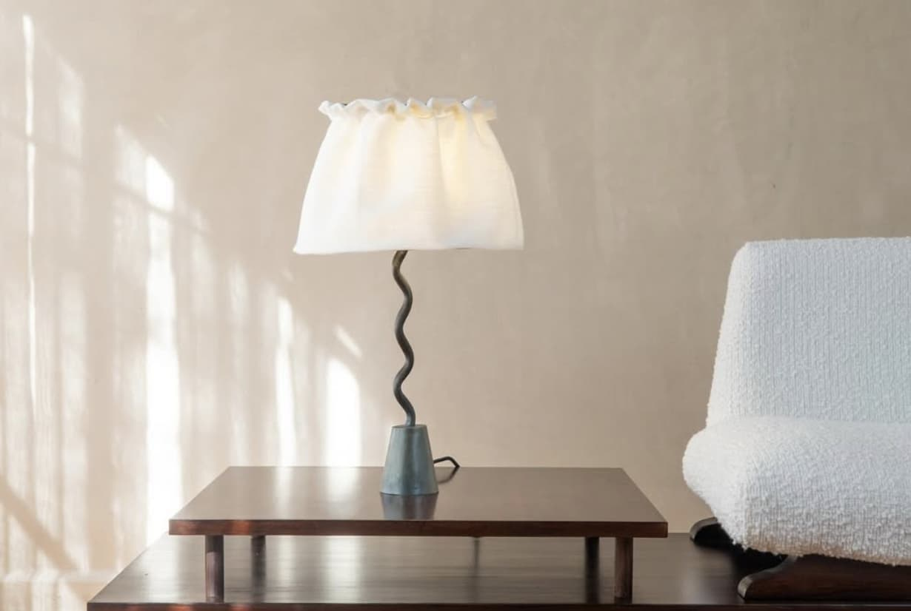
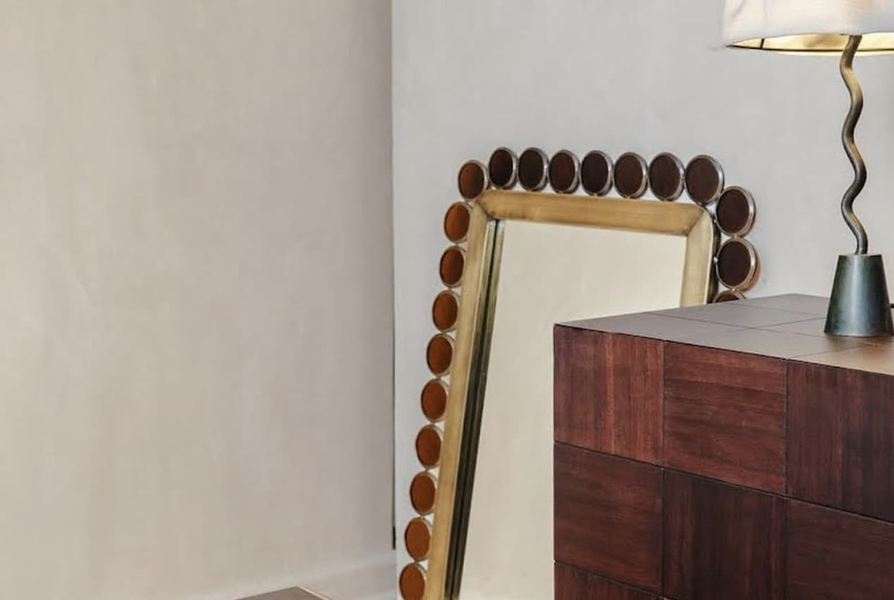
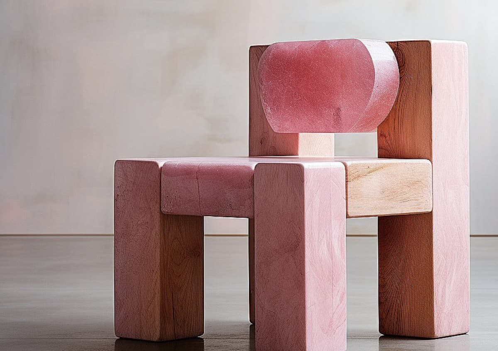

Studio lares

Studio Lares desarrolla proyectos que integran diseño, arquitectura y artesanía, partiendo de una profunda conexión con el contexto cultural. Su trabajo se caracteriza por reinterpretar técnicas tradicionales mediante procesos contemporáneos. El resultado son piezas y espacios que reflejan una identidad local, donde los materiales y las formas dialogan con la historia y el entorno en el que se insertan.
Diseños

The lamp, Ciudad de México, 2024

Collection 1, The mirror y The credenza, Ciudad de México, 2024

Silla rosa, Ciudad de México, 2024